Стадион "Самара-Арена" построен к ЧМ-2018. Во время новогодних праздников ставят большую ёлку, проходят концерты, гуляния, конкурсы, катают на тройках и на оленях. Рядом со стадионом играет музыка, есть горки для катания на ватрушках,катки, лыжня, снежный лабиринт, дом Снегурочки, можно купить горячие напитки и различный фастфуд; есть места для обогрева, прокат спортинвентаря, туалеты. В 2021 году из-за пандемии игры и конкурсы не проводились, по этой же причине не было катаний на лошадях и были закрыты "теплушки". Зато устроили парад планет, перед стадионом стоял десятиметровый космонавт, на больших экранах демонстрировались познавательные ролики о Солнечной системе. На интерактивных площадках рассказывалось о покорении космоса, питании космонавтов и т.д. Не смотря на ограничительные мероприятия, звучит музыка. Летом на территории тоже есть, чем заняться. Многие приезжают туда, чтобы покататься на роликах, велосипедах и самокатах.
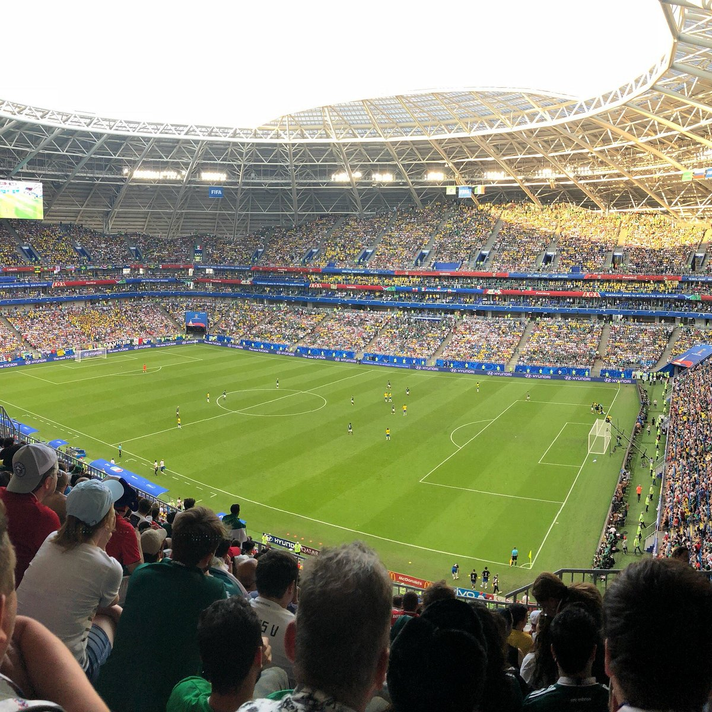 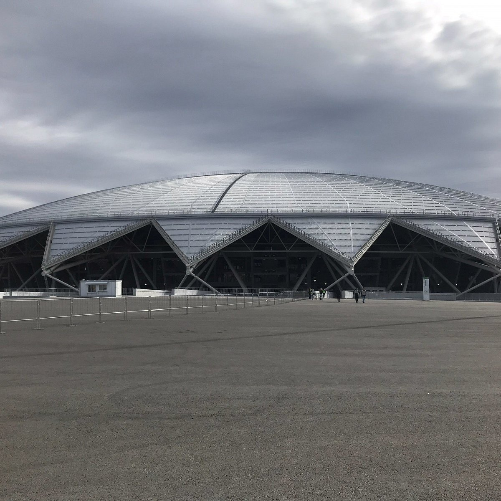 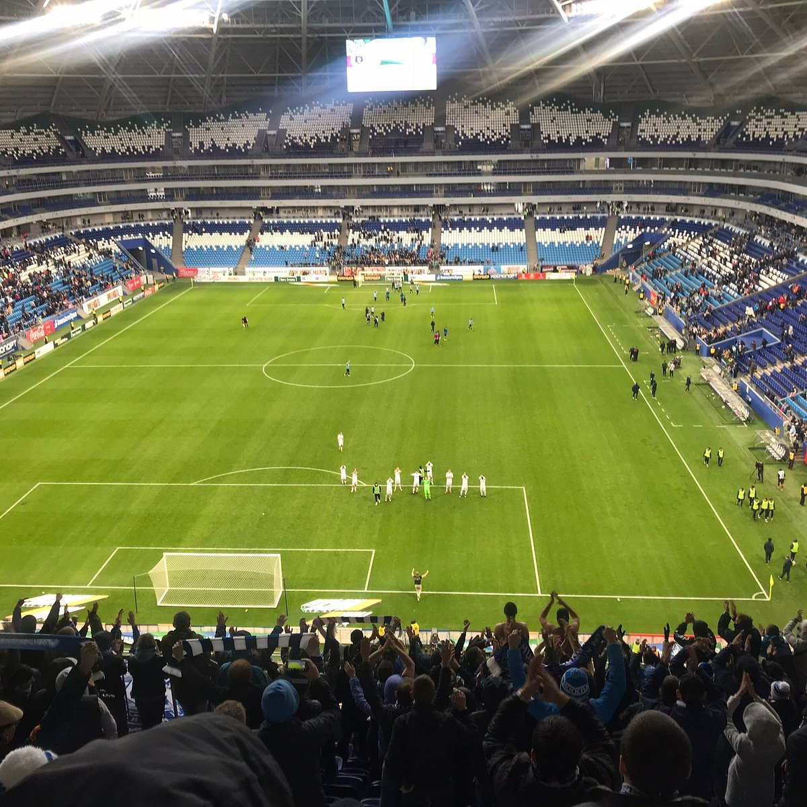 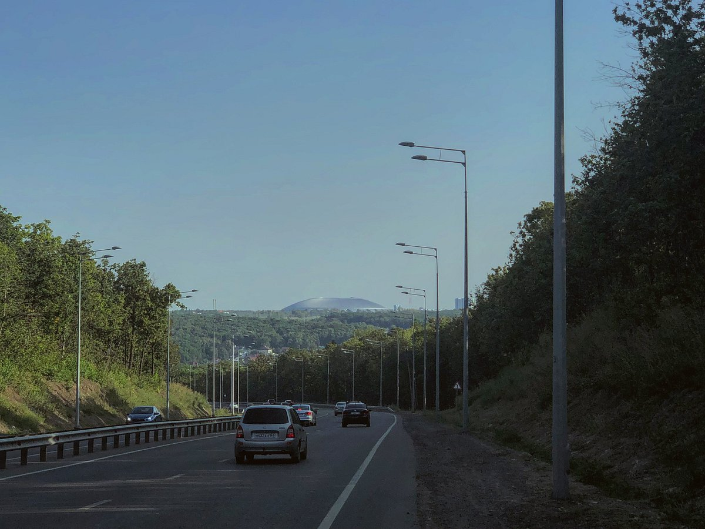 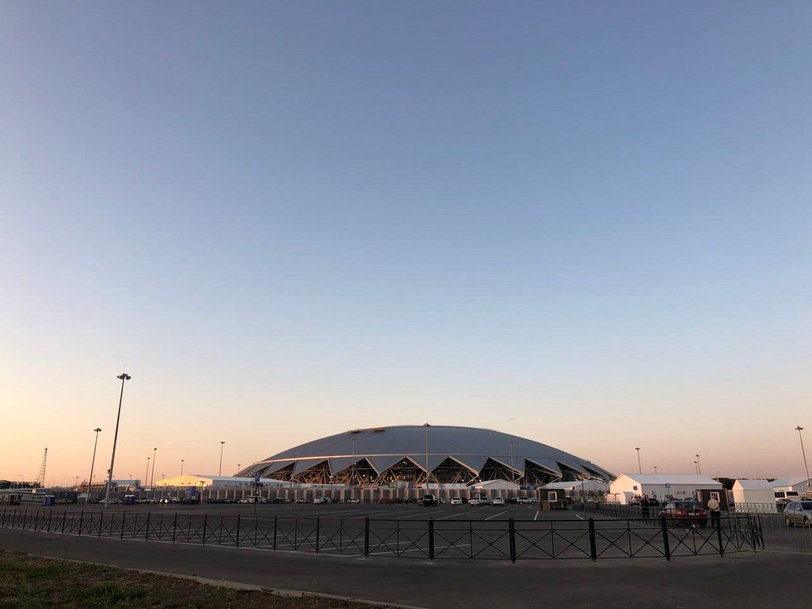Самара — железнодорожная станция в российском городе Самара. Здание вокзала построено в 2001 году. Высота здания со шпилем составляет 101 метр.Сегодняшний железнодорожный вокзал жд станции Самара — второй в истории города.В высотной части вокзала размещаются: залы повышенной комфортности сервис-центра для кратковременного и длительного ожидания поездов, которые связаны двумя панорамными лифтами с этажами вокзала и конкорсом . В центре атриума заложен зимний сад с фонтаном. на уровне конкорса и выше – два видеозала, кафе, залы ожидания.
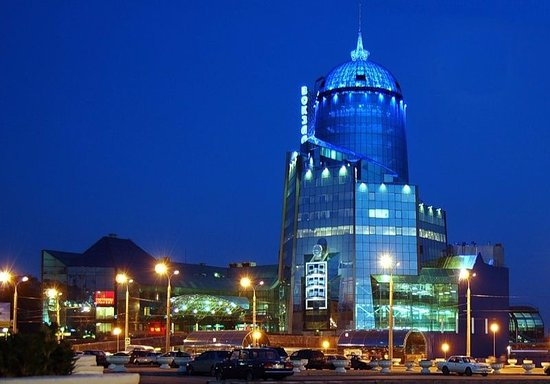 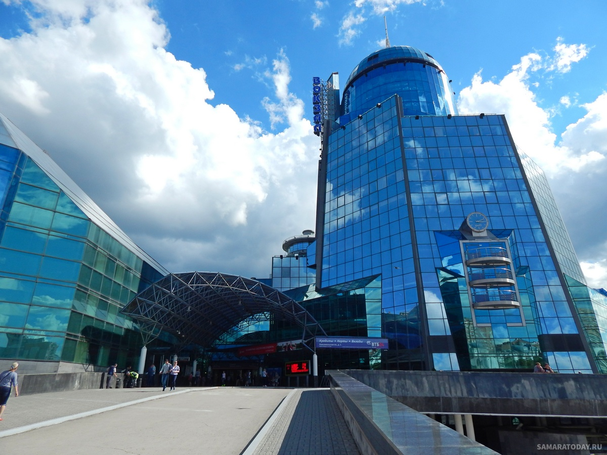 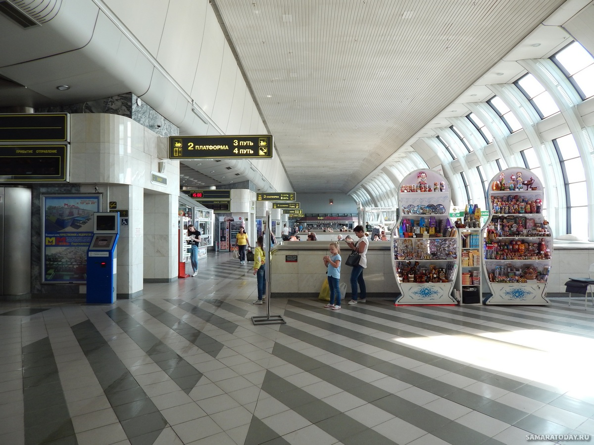 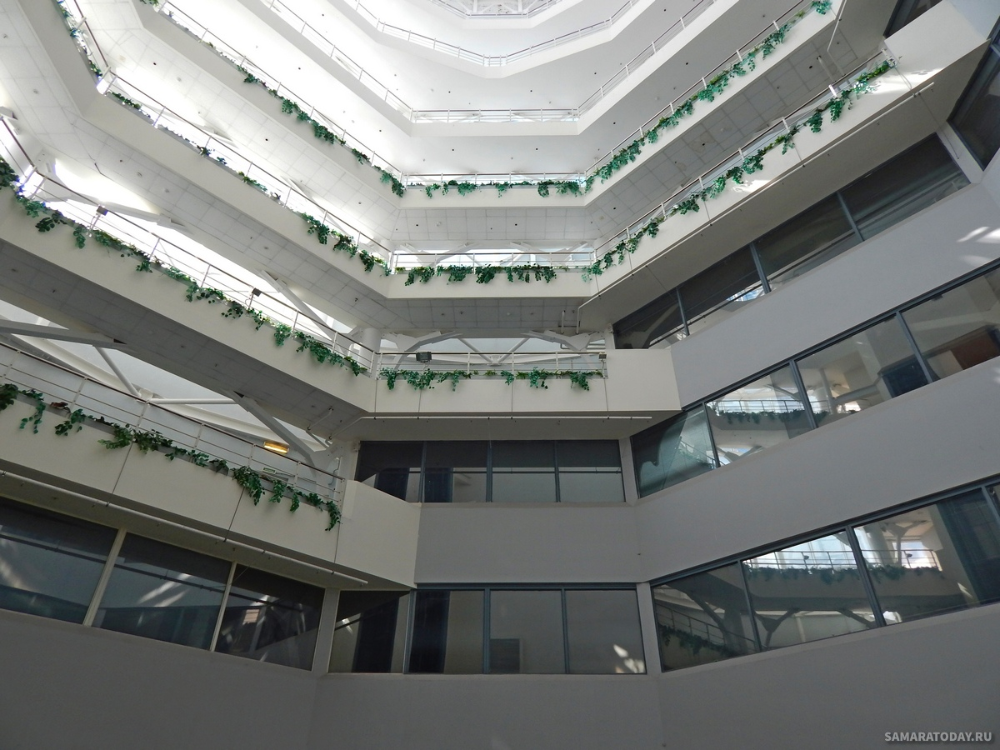 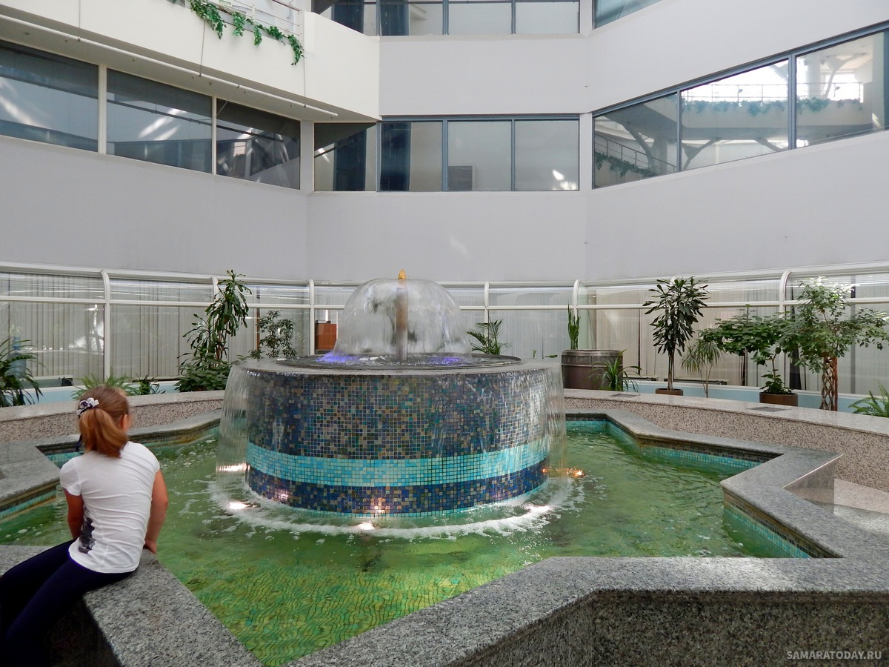 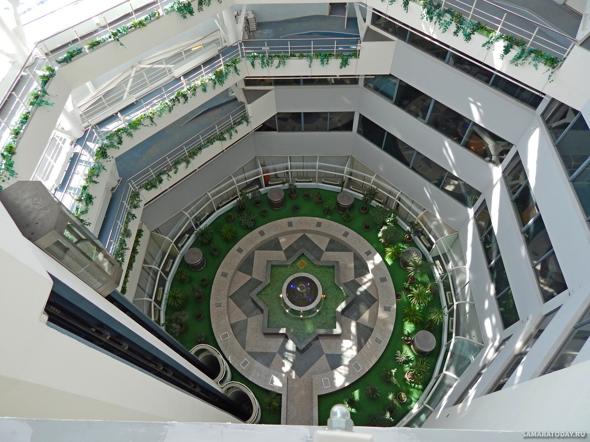 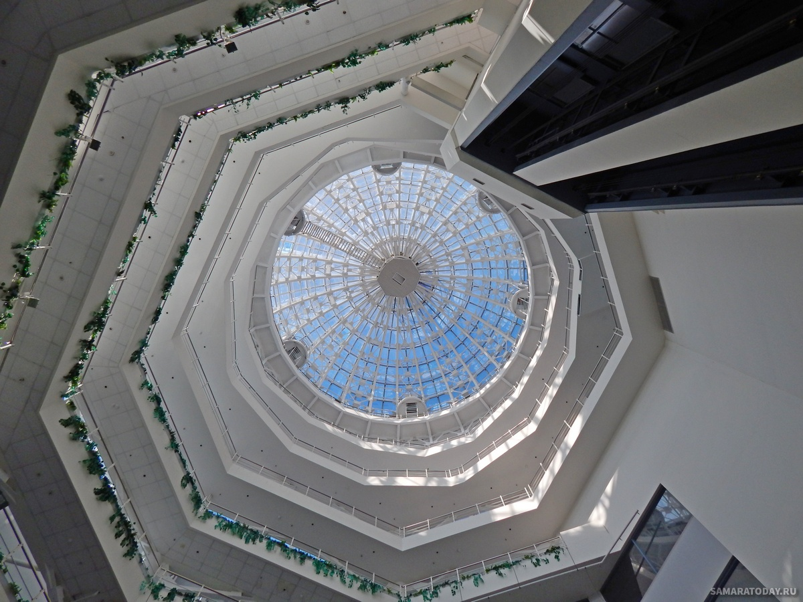 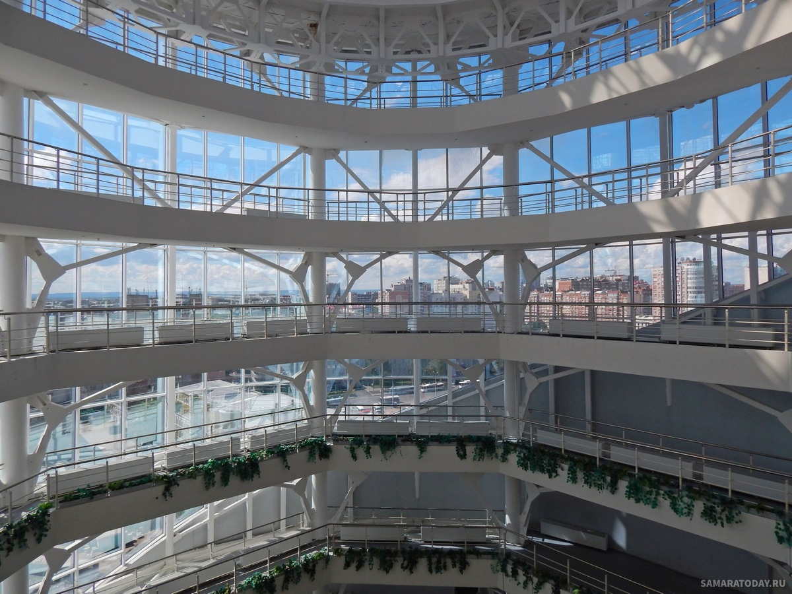